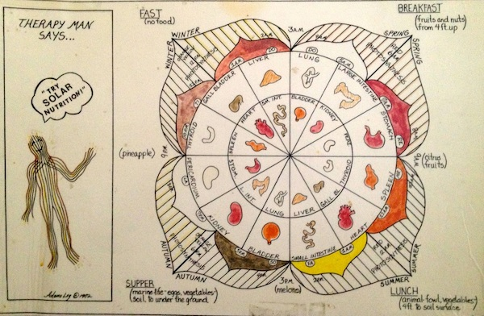

Solar Nutrition
Solar Foods List in Printable Format
Solar Nutrition is a method of eating based on timing in order that one may synchronize with the movement of the planet, and in so doing, lower stress, conserve energy and live a longevity life-style. It’s not what you eat but when you eat it. It was modernized by Swami Nityananda Saraswati, also known as Adano Ley, who said, “Eat your way to butterflyhood.” Solar Nutrition utilizes the Chinese Biological Time Clock to synchronize the input of nutrients with the organs of the body in their growth cycles. The timing is determined by the placement of the Sun in the sky and its subsequent effect on the growth patterns of plants and animals. Consequently, in the morning, when the sun is low on the eastern horizon, one eats the foods that grow on trees, such as fruits and nuts. In the middle of the day, when the sun is at its zenith, eat things that grow on top of the ground, such as grains and most vegetables and the 2 and 4 legged animals. And at night, when the sun is below the western horizon, eat the foods that grow in the water, underground, or in darkness, such as root vegetables, fish and mushrooms.
Five Laws of Solar Nutrition
- A little of anything is medicine for the system, too much is toxic: Confucius
- There is a time, a place, a season for everything: Solomon
- Live to eat in order to get sick.
- Live to eat in order not to get sick.
- Live to eat in order to live not to eat.
Here’s a typical day’s menu:
Breakfast: Soaked almonds, prunes and peaches. Solar coffee comes from the arabica bean (read labels), and has cocoa and maple syrup added to promote healthy hormone balancing throughout the day.
Morning snack: Any citrus fruit eaten alone.
Lunch: Tofu (or chicken), brown rice, steamed cauliflower and broccoli, green salad.
Afternoon snack: Any melon to eat alone; or berries.
Dinner: Fish, brown rice, watercress salad.
Notes about Soaked Almonds:
- They should be the first thing you put in your mouth in the morning. This sets the hydrochloric acid levels in the stomach for the entire day.
- Soak them overnight.
- Eat one almond for every ten pounds of body weight you want to weigh. If you want to weight 170 pounds, then eat 17 almonds.
- To estimate your ideal weight, simply measure the diameter of the smallest part of your wrist and multiply by height in inches. If your wrist is 2.5 inches in diameter and you are 5′ 10″ tall, your ideal weight is 175 pounds.
Anytime (or one food as therapy): Apple Cider Vinegar, Brown Rice, Ghee (clarified butter), Herb Teas, Honey
Prohibited Foods: Meat and Cheese Eaten Together, Black Pepper, Popcorn with Hulls, Melted Cheese, Carbonated Beverages, and Deep Fried Foods.


Solar Foods for Morning
Midnight to Noon Local Standard Time
(not Daylight Savings Time)
Italicized foods are weight-loss foods
Nuts:
Almonds (see important note above about Almonds)
Brazil
Cashews (must be roasted)
Coconut
Filbert
Hazelnut
Macadamia
Pecans
Pinon(Pine)
Sweeteners:
Maple Syrup
Honey
Coffee:
Arabica
Fruits:
Apples
Apricots
Avocado (eat alone, not with any other fruit)
Banana
Cherries
Dates
Figs
Guava
Mangoes
Olives
Papaya
Peaches
Pears
Persimmons
Plums
Pomegranates
Prunes
Citrus Fruits: Eat Alone
Grapefruit
Kumquats
Lemons
Limes
Oranges
Tangerines
Oils:
Almond
Apricot
Avocado
Coconut
Cream (not milk)
Olive
Walnut
Anytime (or one food as therapy):
Apple Cider Vinegar
Brown Rice
Ghee (clarified butter)
Herb Teas
Honey
Solar Foods for Afternoon
Noon to 6 PM Local Standard Time
(not Daylight Savings Time)
Italicized foods are weight-loss foods
Breads: all kinds if baked properly
Cheeses: all kinds if natural
Meat: fowl, lamb, beef, venison, and pork
Seeds:
Caraway
Chia
Flax
Poppy
Pumpkin
Sesame
Sunflower
Vegetables:
Artichokes - Globe
Bitter Cucumber
Bitter Melon
Squash
Bok Choy
Broccoli
Brussels Sprouts
Cabbage - all kinds
Cauliflower
Celery
Cereals - all kinds
Corn - fresh
Cucumber
Dried Beans - all kinds
Dried Peas - all kinds
Eggplant
Endive
Escarole
Fresh Beans - all kinds
Fresh Peas - all kinds
Grains - all kinds
Greens - all kinds/garden & wild
Herbs - culinary (Cooking)
Lettuce - All kinds
Okra
Parsley
Hot Peppers - Cayenne only (capsicum)
Sweet Pepper - Bell, yellow banana
Pumpkin
Rhubarb
Sauerkraut
Spinach - must be raw
Sprouts - all kinds
Squash - all kinds
Sugar Cane (good brown sugar)
Tomatoes
Oils:
Butter (Clarified)
Safflower
Sesame
Soy
Sunflower
Wheat Germ
Sweeteners:
Cane sugar
Brown sugar
Honey
Molasses
Sorghum Syrup
Fruits: (best at 3PM - 5PM)
Blackberries
Blueberries
Boysenberries
Cranberries
Dewberries
Gooseberries
Grapes
Raisins
Raspberries
Strawberries
Melons: Eat alone
Cantaloupe
Casaba
Honeydew
Watermelon
Afternoon or Night:
Brewer’s Yeast
Miso
Tamari - Soy Sauce
Tofu
Vegemeats
Anytime (or one food as therapy):
Apple Cider Vinegar
Brown Rice
Ghee (clarified butter)
Herb Teas
Honey
Solar Foods for Evening
6 PM to Midnight Local Standard Time
(not Daylight Savings Time)
Italicized foods are weight-loss foods
Fruits:
Pineapple
Prickly Pear Cactus
Protein: Fish, Seafood, and Eggs
Nut-like:
Peanuts - must be roasted
Water Chestnut
Oils:
Butter (Clarified)
Garlic
Peanut
Vegetables:
Artichoke - Jerusalem
Artichoke Hearts - Globe
Asparagus Shoots
Bamboo Shoots
Beet
Bok Choy (Bottom 4 inches)
Carrot
Celery - bottom 4 inches
Celery Root
Dulce
Edoes
Garlic
Ginger Root
Hearts of Palm
Horseradish
Jicama
Kelp - all kinds seaweed
Leeks - bottom 4 inches
Lotus Root
Malanga
Manglewurzel
Mushrooms
Nopalitos Cactus
Onions
Parsnips
Plantain
Potatoes (Red, white & sweet)
Radishes (red, black, cohosh, daikon)
Rutabagas
Scallions - bottom 4 inches
Sea Cucumber
Taro Root
Turnip - all kinds
Watercress
Yams
Yucca Root (Cassava)
Sweeteners:
Honey
Miel de Maguey (syrup from Maguey Cactus)
Sea Salt
Afternoon or Night:
Brewer’s Yeast
Miso
Tamari - Soy Sauce
Tofu
Vegemeats
Anytime (or one food as therapy):
Apple Cider Vinegar
Brown Rice
Ghee (clarified butter)
Herb Teas
Honey